南通欢迎您，世博等着您！
#1 南通欢迎您，世博等着您！ 作者：有志青年 发表时间：2010-5-17 12:48:04
一楼：南通简介
南通概况 http://www.ntlyw.com/expo/nantonglvyougaikuang/index.asp

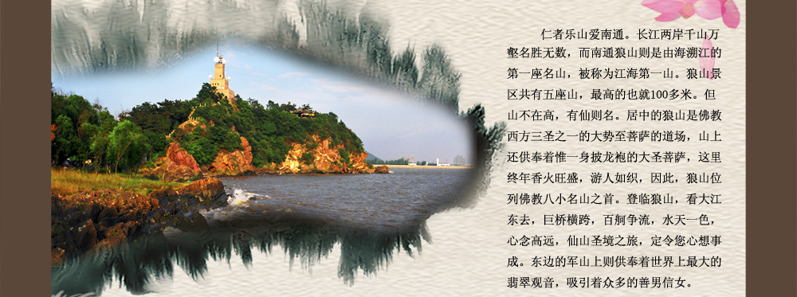
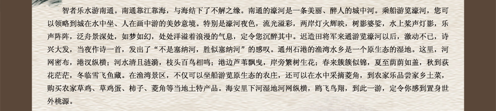
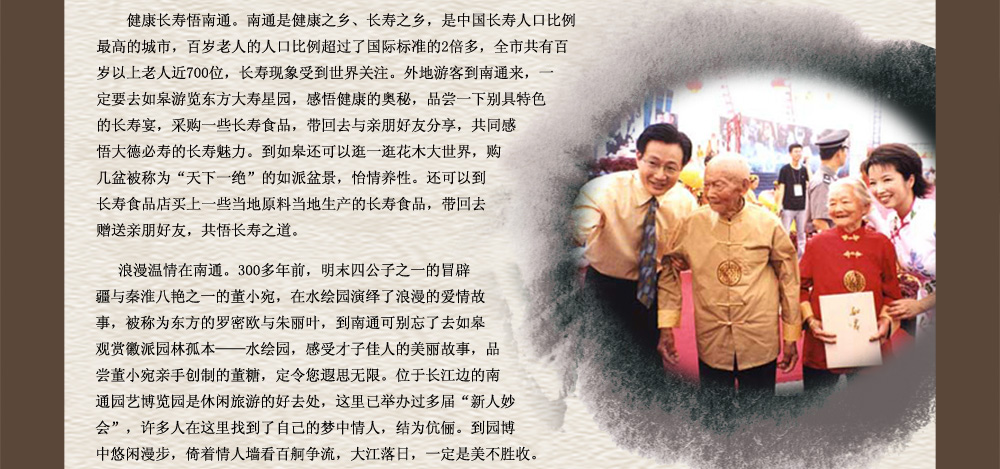
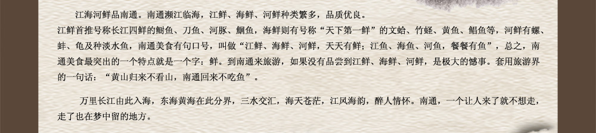
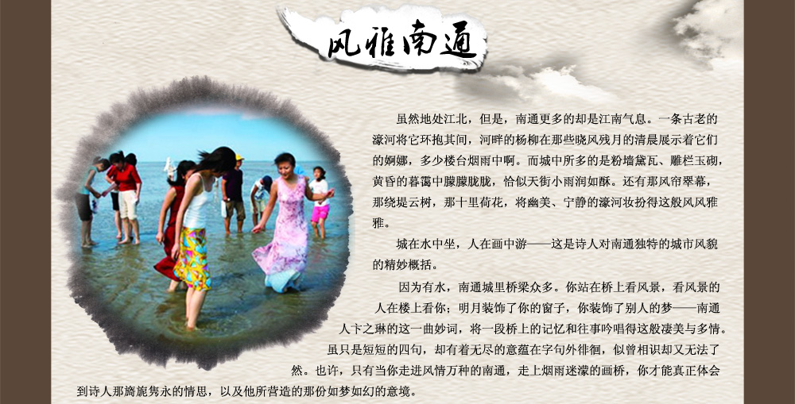
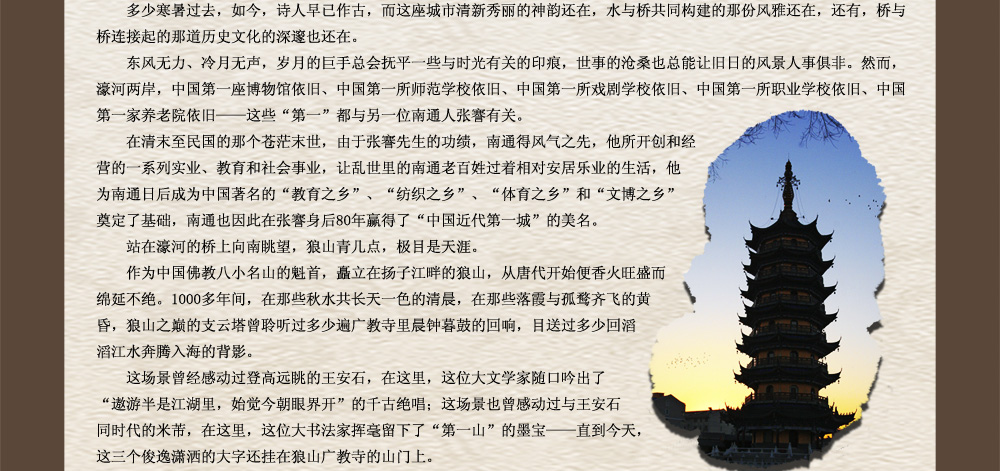
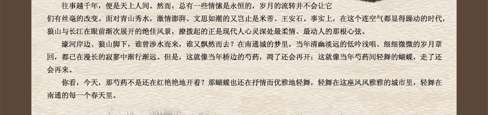
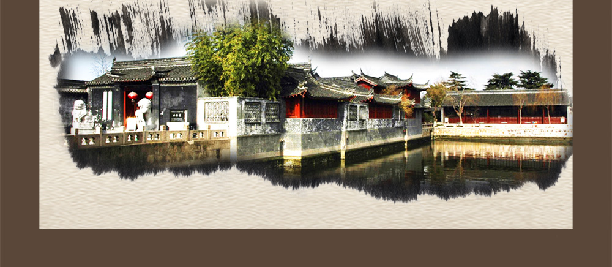
［此帖子已被 有志青年 在 2010-5-17 13:02:21 编辑过］
［此帖子已被 有志青年 在 2010-5-17 13:14:35 编辑过］
#2 濠河、狼山均在南通市内 作者：有志青年 发表时间：2010-5-17 12:48:20
濠河风景名胜区 (东方塞纳河) http://www.ntlyw.com/expo/haohe/index.asp
南通濠河环绕南通老城区，形如葫芦，宛如珠链，被誉为南通城的“翡翠项链”。是4A级景点。濠河原为古护城河，史载后周显德五年（公元958年）筑城即有河。现周长10公里，水面1080亩，水面最宽处215米，最窄处仅10米，是国内保留最为完整且位居城市中心的古护城河。距今有千余年的历史，是国内仅存的四条古护城河之一。濠河水清如镜，自然风光优美，拥有江鸥、野鸭、鱼鹰等自然生态群落。濠河两岸有光孝塔、天宁寺、北极阁、文峰塔、南通博物苑、五公园等名胜古迹，有张謇、李方膺、赵丹等名人故居，还有濠东绿苑、濠西书苑、环西文化广场、文化宫、文峰公园、映红楼、体育公园等新兴的文化娱乐场所和旅游景点，以及28座桥和各种名木古树。清澈洁净的濠河与亭、台、楼、阁、塔、榭、坊等交相辉映，人文景观与自然风光融为一体，千百年积累的历史遗迹、园林艺术、乡俗风情奠定了濠河古朴凝重的文化底蕴，而现代城市的崛起，又赋予它朝气勃勃地时代风采。
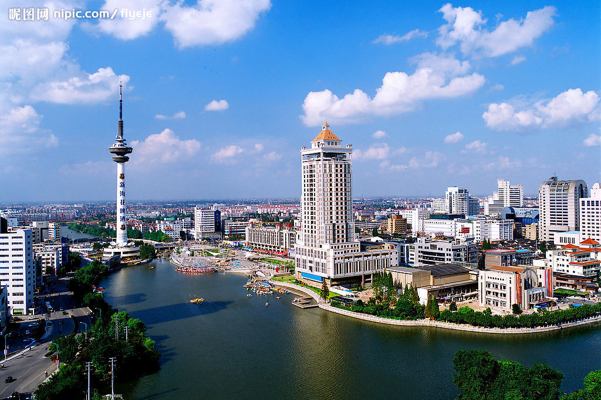
狼山风景名胜区 (最灵验的名山)http://www.ntlyw.com/expo/langshan/index.asp

狼山 位于南通市南郊，是著名的自然风景区，由狼山、马鞍山、黄泥山、剑山和军山组成，南临长江、山水相依，通称五山。狼山居其中， 海拔109米，最为峻拔挺秀，文物古迹众多，其他四山如众星拱月，狼山成为五山之首。另外，狼山又是全国八小佛教名山之首、“江海第一山”。
南通博物苑 (中国最早的民间博物馆) http://www.ntlyw.com/expo/bowuyuan/index.asp
［此帖子已被 有志青年 在 2010-5-17 13:04:07 编辑过］
［此帖子已被 有志青年 在 2010-5-17 13:12:57 编辑过］
［此帖子已被 有志青年 在 2010-5-17 13:13:53 编辑过］
#3 三楼：比赛场地 作者：有志青年 发表时间：2010-5-17 12:48:48
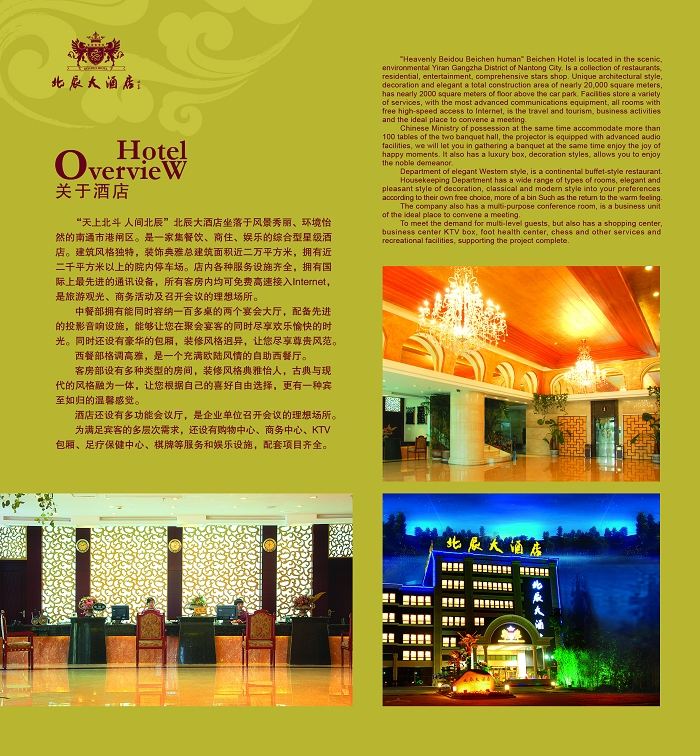
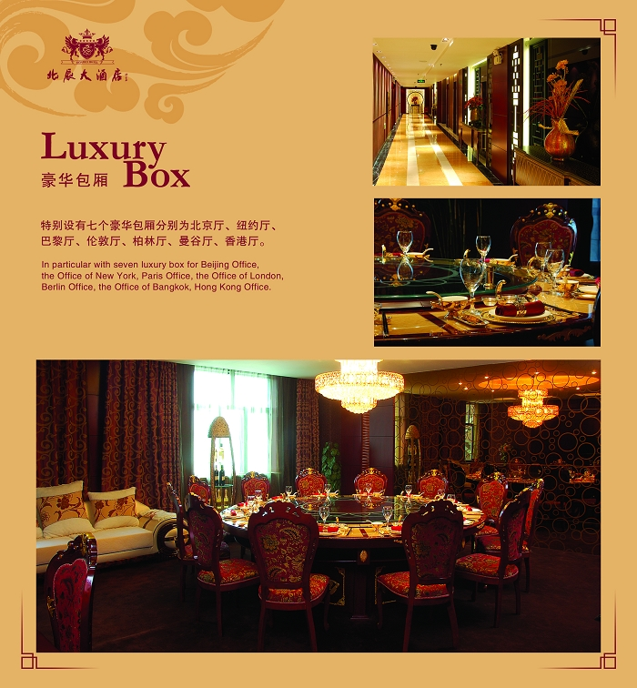
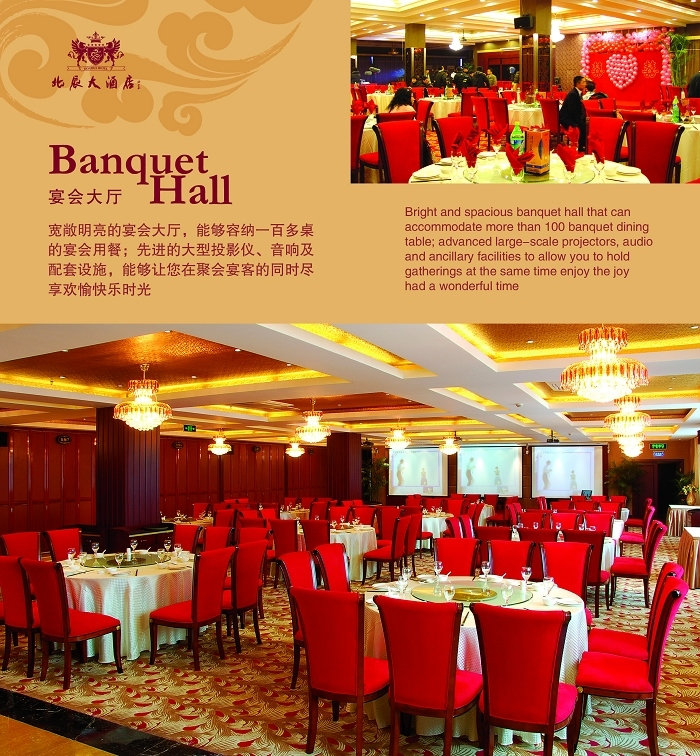
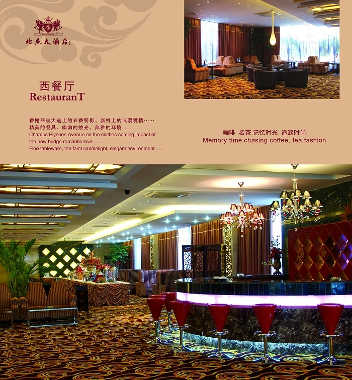
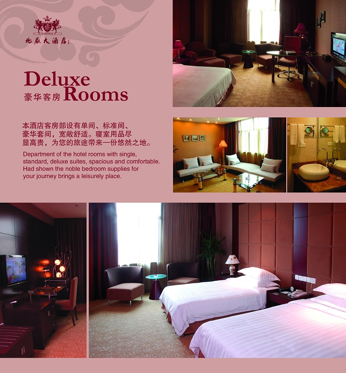
［此帖子已被 有志青年 在 2010-6-22 16:38:17 编辑过］
#4 Re:南通欢迎您 作者：有志青年 发表时间：2010-5-17 12:49:18
四楼：周边（上海、苏锡常）
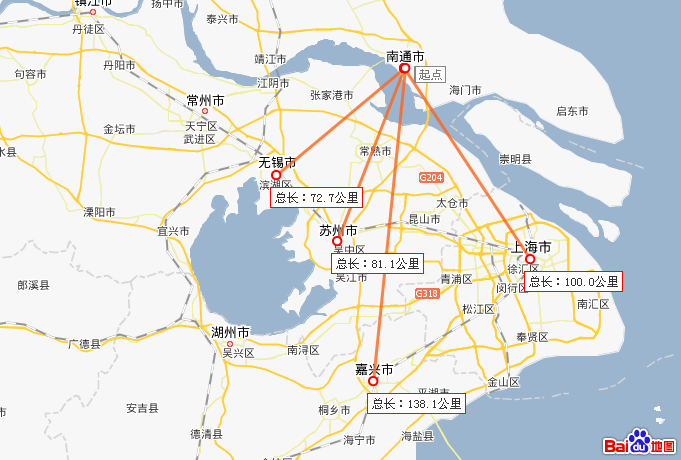
去看世博？南通去上海，长途车2小时
去苏州乐园？梦里水乡？南通去苏州，长途车2小时
灵山大佛？水浒城？南通去无锡，长途车2小时
……
［此帖子已被 有志青年 在 2010-5-17 13:09:56 编辑过］
［此帖子已被 有志青年 在 2010-5-17 13:10:37 编辑过］
#5 Re:南通欢迎您 作者：无尽 发表时间：2010-5-17 12:57:53
哦 原来是全少赛
［此帖子已被 无尽 在 2010-5-17 12:59:13 编辑过］
#6 Re:南通欢迎您，世博等着您！ 作者：黄药师 发表时间：2010-5-17 16:03:18
六楼
2010全少赛 形象大使 有志青年

#7 Re:南通欢迎您，世博等着您！ 作者：心上人 发表时间：2010-5-17 18:52:53
南通漂亮的地方，物华天宝#8 Re:南通欢迎您，世博等着您！ 作者：笑雨辰 发表时间：2010-5-17 22:49:23
南通话完全听不懂#9 Re:南通欢迎您，世博等着您！ 作者：坏坏的闹闹 发表时间：2010-5-18 10:36:15
 去南通吃海鲜去~
去南通吃海鲜去~
#10 Re:南通欢迎您，世博等着您！ 作者：飛龍在天 发表时间：2010-5-18 10:51:34
我要加入
#11 Re:南通欢迎您，世博等着您！ 作者：茗弈宽容 发表时间：2010-5-18 13:05:14
 那个图上不是有志哥吗？
那个图上不是有志哥吗？
#12 Re:南通欢迎您，世博等着您！ 作者：龙小小 发表时间：2010-5-20 21:12:12
好想去看看哦
#13 Re:Re:南通欢迎您，世博等着您！ 作者：黄药师 发表时间：2010-5-21 9:02:26
引用：欢迎来南通！
原文由 龙小小 发表于 2010-5-20 21:12:12 :
好想去看看哦
#14 Re:南通欢迎您，世博等着您！ 作者：锐 发表时间：2010-5-27 8:47:48
有志费心了！！！看了真让人心动，好想去南通玩玩：）［ 黄药师 于 2010-5-27 11:35:40 时奖励此帖[金币加 20 威望加1］